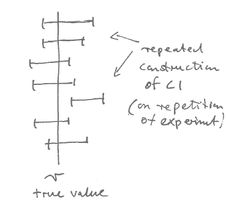

A Refresher
Statistics is a mathematical science that requires practical use of tools from probability, vector and matrices, analysis etc.
Here we briefly list some essentials that are needed for “Statistical Methods”. Please familiarise yourself (again) with these topics.
A.1 Vectors and matrices
Vector and matrix notation.
Vector algebra.
Eigenvectors and eigenvalues for a real symmetric matrix.
Eigenvalue (spectral) decomposition of a real symmetric matrix.
Positive and negative definiteness of a real symmetric matrix (containing only positive or only negative eigenvalues).
Singularity of a real symmetric matrix (containing one or more eigenvalues identical to zero).
Singular value decomposition of a real matrix.
A.2 Functions
A.2.1 Gradient
The nabla operator (also known as del operator) is the row vector \[ \nabla = (\frac{\partial}{\partial x_1}, \ldots, \frac{\partial}{\partial x_d}) = \frac{\partial}{\partial \boldsymbol x} \] containing the first order partial derivative operators.
The gradient of a scalar-valued function \(f(\boldsymbol x)\) with vector argument \(\boldsymbol x= (x_1, \ldots, x_d)^T\) is also a row vector (with \(d\) columns) and can be expressed using the nabla operator \[ \nabla f(\boldsymbol x) = \left( \frac{\partial f(\boldsymbol x)}{\partial x_1}, \ldots, \frac{\partial f(\boldsymbol x)}{\partial x_d} \right) = \frac{\partial f(\boldsymbol x)}{\partial \boldsymbol x} = \text{grad} f(\boldsymbol x) \, . \] Note the various notations for the gradient.
Examples:
- \(f(\boldsymbol x)=\boldsymbol a^T \boldsymbol x+ b\). Then \(\nabla f(\boldsymbol x) = \frac{\partial f(\boldsymbol x)}{\partial \boldsymbol x} = \boldsymbol a^T\).
- \(f(\boldsymbol x)=\boldsymbol x^T \boldsymbol x\). Then \(\nabla f(\boldsymbol x) = \frac{\partial f(\boldsymbol x)}{\partial \boldsymbol x} = 2 \boldsymbol x^T\).
- \(f(\boldsymbol x)=\boldsymbol x^T \boldsymbol A\boldsymbol x\). Then \(\nabla f(\boldsymbol x) = \frac{\partial f(\boldsymbol x)}{\partial \boldsymbol x} = \boldsymbol x^T (\boldsymbol A+ \boldsymbol A^T)\).
A.2.2 Hessian matrix
The matrix of all second order partial derivates of scalar-valued function with vector-valued argument is called the Hessian matrix and is computed by double application of the nabla operator: \[ \nabla^T \nabla f(\boldsymbol x) = \begin{pmatrix} \frac{\partial^2 f(\boldsymbol x)}{\partial x_1^2} & \frac{\partial^2 f(\boldsymbol x)}{\partial x_1 \partial x_2} & \cdots & \frac{\partial^2 f(\boldsymbol x)}{\partial x_1 \partial x_d} \\ \frac{\partial^2 f(\boldsymbol x)}{\partial x_2 \partial x_1} & \frac{\partial^2 f(\boldsymbol x)}{\partial x_2^2} & \cdots & \frac{\partial^2 f(\boldsymbol x)}{\partial x_2 \partial x_d} \\ \vdots & \vdots & \ddots & \vdots \\ \frac{\partial^2 f(\boldsymbol x)}{\partial x_d \partial x_1} & \frac{\partial^2 f(\boldsymbol x)}{\partial x_d \partial x_2} & \cdots & \frac{\partial^2 f(\boldsymbol x)}{\partial x_d^2} \end{pmatrix} = \left(\frac{\partial f(\boldsymbol x)}{\partial x_i \partial x_j}\right) = {\left(\frac{\partial}{\partial \boldsymbol x}\right)}^T \frac{\partial f(\boldsymbol x)}{\partial \boldsymbol x} \,. \] By construction it is square and symmetric.
A.2.3 Conditions for local maximum of a function
Function has one variable:
- First derivative is zero at maximum.
- Second derivative is negative at maximum (negative curvature).
Function has several variables:
- Gradient vanishes at maximum.
- Negative definite Hessian matrix at maximum (all eigenvalues of Hessian matrix are negative).
A.2.4 Linear and quadratic approximation
Taylor series of first / second order.
Applied to scalar-valued function of a scalar: \[ f(x) \approx f(x_0) + f'(x_0) (x-x_0) + \frac{1}{2} f''(x_0) (x-x_0)^2 \] With \(x = x_0+ \varepsilon\) this can be written as \[ f(x_0+ \varepsilon) \approx f(x_0) + f'(x_0) \, \varepsilon + \frac{1}{2} f''(x_0)\, \varepsilon^2 \]
Applied to scalar-valued function of a vector: \[ f(\boldsymbol x) \approx f(\boldsymbol x_0) + \nabla f(\boldsymbol x_0) (\boldsymbol x-\boldsymbol x_0) + \frac{1}{2} (\boldsymbol x-\boldsymbol x_0)^T \nabla^T \nabla f(\boldsymbol x_0) (\boldsymbol x-\boldsymbol x_0) \] With \(\boldsymbol x= \boldsymbol x_0+ \boldsymbol \varepsilon\) this can be written as \[ f(\boldsymbol x_0+ \boldsymbol \varepsilon) \approx f(\boldsymbol x_0) + \nabla f(\boldsymbol x_0)\boldsymbol \varepsilon+ \frac{1}{2} \boldsymbol \varepsilon^T \nabla^T \nabla f(\boldsymbol x_0) \boldsymbol \varepsilon \]
A.2.5 Functions of matrices
Matrix inverse, matrix square root etc. of symmetric real matrices.
Computation via eigenvalue decomposition i.e. apply function such as inverse, sqrt etc. on the eigenvalues.
In this course we do not actually compute matrix functions, but we will use matrix notation for matrix square roots, so you do need to know that it is exists and that it is not the same as taking the square root of the matrix entries.
Trace and determinant of a square matrix.
Connection with eigenvalues (trace = sum of eigenvalues, determinant = product of eigenvalues).
A.3 Probability
A.3.1 Law of large numbers:
By the strong law of large numbers the empirical distribution \(\hat{F}_n\) converges to the true underlying distribution \(F\) as \(n \rightarrow \infty\) almost surely: \[ \hat{F}_n\overset{a. s.}{\to} F \] The Glivenko–Cantelli theorem asserts that the convergence is uniform. Since the strong law implies the weak law we also have convergence in probability: \[ \hat{F}_n\overset{P}{\to} F \]
Correspondingly, for \(n \rightarrow \infty\) the average \(\text{E}_{\hat{F}_n}(h(X)) = \frac{1}{n} \sum_{i=1}^n h(x_i)\) converges to the expectation \(\text{E}_{F}(h(X))\).
A.3.2 Jensen’s inequality
\[\text{E}(h(X)) \geq h(\text{E}(X))\] for a convex function \(h(x)\).
A function is convex if \(h''(x) \geq 0\). Note: if \(h(x)\) is convex, then \(-h(x)\) is concave.
A.3.3 Transformation of univariate densities
For a general coordinate transformation \(y = h(x)\) the backtransformation is \(x = h^{-1}(y)\).
The transformation of the infinitesimal volume element is \(dy = |\frac{dy}{dx}| dx\).
The transformation of the density is \(f_y(y) =\left|\frac{dy}{dx}\right|^{-1} f_x(h^{-1} (y))\).
A.3.4 Normal distribution
Univariate normal distribution:
\(x \sim N(\mu,\sigma^2)\) with \(\text{E}(x)=\mu\) and \(\text{Var}(x) = \sigma^2\).
Probability density function (PDF): \[f(x| \mu, \sigma^2)=(2\pi\sigma^2)^{-\frac{1}{2}}\exp\left(-\frac{(x-\mu)^2}{2\sigma^2}\right)\]
In R the density function is called dnorm().
The standard normal distribution is \(N(0, 1)\) with mean 1 and variance 1.
Plot of the PDF of the standard normal:

The cumulative distribution function (CDF) of the standard normal \(N(0,1)\)
is
\[
\Phi (x ) = \int_{-\infty}^{x} f(x'| \mu=0, \sigma^2=1) dx'
\]
There is no analytic expression for \(\Phi(x)\). In R the function is called pnorm().

The inverse \(\Phi^{-1}(p)\) is called the quantile function of the standard normal.
In R the function is called qnorm().

A.3.5 Chi-squared distribution
Asume \(m\) independent standard normal random variables \[z_1,z_2,\dots,z_m\sim N(0,1)\] Then the sum of the squares \[x = \sum_{i=1}^{m} z_i^2\] is a chi-squared random variable \(x\sim \chi^2_m\) with degree of freedom \(m\) and \(x\geq 0\).
The mean of a \(\chi^2_m\) distributed random variable \(x\) is \(\text{E}(x)=m\) and the variance \(\text{Var}(x)=2m\).
The chi-squared distribution is a special case (assuming \(\sigma^2=1\)) of the scaled chi-squared distribution \(\sigma^2 \chi^2_m\) that arises if the \(z_i \sim N(0,\sigma^2)\) have variance \(\sigma^2\). The mean and variance of a scaled chi-squared distributed variable is \(\text{E}(x)=m \sigma^2\) and \(\text{Var}(x)=2m\sigma^4\).
The Gamma distribution \(Gamma(\alpha, \beta)\) is another name of the scaled chi-squared distribution but by convention is uses a different parameterisation with shape parameter \(\alpha\) and scale parameter \(\beta\). The scaled chi-squared distribution \(\sigma^2 \chi^2_m\) equals \(Gamma(\frac{m}{2}, 2 \sigma^2)\) and the chi-squared distribution \(\chi^2_m\) equals \(Gamma(\frac{m}{2}, 2)\).
Density of the chi-squared distribution for degrees of freedom \(m=1\) and \(m=3\):

In R the density of the chi-squared distribution is given by dchisq(). The cumulative density function is pchisq() and
the quantile function is qchisq().
The density of the Gamma distribution (aka scaled chi-squared distribution) is available in by dgamma(). The cumulative density function is pgamma() and
the quantile function is qgamma().
A.4 Statistics
A.4.1 Statistical learning
The aim in statistics - data science - statistics - machine learning is to learn from data (from experiments, observations, measurements) to learn about and understand the world.
Specifically, to identify the best model(s) for the data in order to
- to explain the current data, and
- to enable good prediction of future data
Note that it is easy to get models that only explain the data but do not predict well!
This is called overfitting the data and happens in particular if the model is overparameterized for the amount of data available.
Specifically, we have data \(x_1, \ldots, x_n\) and models \(f(x| \theta)\) that are indexed the parameter \(\theta\).
Often (but not always) \(\theta\) can be interpreted and/or is associated with some property of the model.
If there is only a single parameter we write \(\theta\) (scalar parameter). For a parameter vector we write \(\boldsymbol \theta\) (in bold type).
A.4.2 Point and interval estimation
- There is a parameter \(\theta\) of interest in a model
- we are uncertain about this parameter (i.e. we don’t know the exact value)
- we would like to learn about this parameter by observing data \(x_1, \ldots, x_n\) from the model
Estimation:
- An estimator for \(\theta\) is a function \(\hat{\theta}(x_1, \ldots, x_n)\) that maps the data (input) to a “guess” (output) about \(\theta\).
- A point estimator provides a single number for each parameter
- An interval estimator provides a set of possible values for each parameter.
A.4.3 Sampling properties of a point estimator \(\hat{\boldsymbol \theta}\)
A point estimator \(\hat\theta\) depends on the data, hence it has sampling variation (i.e. estimate will be different for a new set of observations)
Thus \(\hat\theta\) can be seen as a random variable, and its distribution is called sampling distribution (accross different experiments).
Properties of this distribution can be used to evaluate how far the estimator deviates (on average across different experiments) from the true value:
\[\begin{align*} \begin{array}{rr} \text{Bias:}\\ \text{Variance:}\\ \text{Mean squared error:}\\ \\ \end{array} \begin{array}{rr} $$\text{Bias}(\hat{\theta})$$\\ $$\text{Var}(\hat{\theta})$$\\ $$\text{MSE}(\hat{\theta})$$\\ \\ \end{array} \begin{array}{ll} $$=\text{E}(\hat{\theta})-\theta$$\\ $$=\text{E}\left((\hat{\theta}-\text{E}(\hat{\theta}))^2\right)$$\\ $$=\text{E}((\hat{\theta}-\theta)^2)$$\\ $$=\text{Var}(\hat{\theta})+\text{Bias}(\hat{\theta})^2$$\\ \end{array} \end{align*}\]
The last identity about MSE follows from \(\text{E}(X^2)=\text{Var}(X)+\text{E}(X)^2\).
At first sight it seems desirable to focus on unbiased (for finite \(n\)) estimators. However, requiring strict unbiasedness is not always a good idea!
In many situations it is better to allow for some small bias and in order to achieve a smaller variance and an overall total smaller MSE. This is called bias-variance tradeoff — as more bias is traded for smaller variance (or, conversely, less bias is traded for higher variance)
A.4.4 Asymptotics
Typically, \(\text{Bias}\), \(\text{Var}\) and \(\text{MSE}\) all decrease with increasing sample size so that with more data \(n \to \infty\) the errors become smaller and smaller.
The typical rate of decrease of variance of a good estimator is \(\frac{1}{n}\). Thus, when sample size is doubled the variance is divided by 2 (and the standard deviation is divided by \(\sqrt{2}\)).
Consistency: \(\hat{\theta}\) is called consistent if
\[\text{MSE}(\hat{\theta}) \longrightarrow 0 \text{ with $n\rightarrow \infty$ }\].
Consistency implies we recover the true model in the limit of infinite data and if the model class contains the true model.
Consistency is a minimum essential requirement for any reasonable estimator! Of all consistent estimators we typically prefer the estimator that is most efficient (i.e. with fasted decrease in MSE) and that thus has smallest variance and/or MSE for given finite \(n\).
Note that if the model class does not contain the true model then strict consistency cannot be achived but we still wish to get at least as close as possible to the true model.
A.4.5 Confidence intervals
- A confidence interval (CI) is an interval estimate with a frequentist interpretation.
- Definition of coverage \(\kappa\) of a CI: how often (in repeated identical experiment) does the estimated CI overlap the true parameter value \(\theta\)
- Eg.: Coverage \(\kappa=0.95\) (95%) means that in 95 out of 100 case the estimated CI will contain the (unknown) true value (i.e. it will “cover” \(\theta\)).
Illustration of the repeated construction of a CI for \(\theta\):

- Note that a CI is actually an estimate: \(\widehat{\text{CI}}(x_1, \ldots, x_n)\), i.e. it depends on data and has a random (sampling) variation.
- A good CI has high coverage and is compact.
Note: the coverage probability is not the probability that the true value is contained in a given estimated interval (that would be the Bayesian Credible Interval).
A.4.6 Symmetric normal confidence interval
For a normally distributed univariate random variable it is straightforward to construct a symmetric two-sided CI with a given desired coverage \(\kappa\).

For a normal random variable \(X \sim N(\mu, \sigma^2)\) with mean \(\mu\) and variance \(\sigma^2\) and density function \(f(x)\) we can compute the probability
\[\text{Pr}(X \leq \mu + c \sigma) = \int_{-\infty}^{\mu+c\sigma} f(x) dx = \Phi (c) = \frac{1+\kappa}{2}\] Note \(\Phi(c)\) is the cumulative distribution function (CDF) of the standard normal \(N(0,1)\):
From the above we obtain the critical point \(c\) from the quantile function, i.e. by inversion of \(\Phi\):
\[c=\Phi^{-1}\left(\frac{1+\kappa}{2}\right)\]
The following table lists \(c\) for the three most commonly used values of \(\kappa\) - it is useful to memorise these values!
| Coverage \(\kappa\) | Critical value \(c\) |
|---|---|
| 0.9 | 1.64 |
| 0.95 | 1.96 |
| 0.99 | 2.58 |
A symmetric standard normal CI with nominal coverage \(\kappa\) for
- a scalar parameter \(\theta\)
- with normally distributed estimate \(\hat{\theta}\) and
- with estimated standard deviation \(\hat{\text{SD}}(\hat{\theta}) = \hat{\sigma}\)
is then given by \[\widehat{\text{CI}}=[\hat{\theta} \pm c \hat{\sigma}]\]
where \(c\) is chosen for desired coverage level \(\kappa\).
A.4.7 Confidence interval for chi-squared distribution

As for the normal CI we can compute critical values but for the chi-squared distribution we use a one-sided interval: \[ \text{Pr}(X \leq c) = \kappa \] As before we get \(c\) by the quantile function, i.e. by inverting the CDF of the chi-squared distribution.
The following list the critical values for the three most common choice of \(\kappa\) for \(m=1\) (one degree of freedom):
| Coverage \(\kappa\) | Critical value \(c\) (\(m=1\)) |
|---|---|
| 0.9 | 2.71 |
| 0.95 | 3.84 |
| 0.99 | 6.63 |
A one-sided CI with nominal coverage \(\kappa\) is then given by \([0, c ]\).